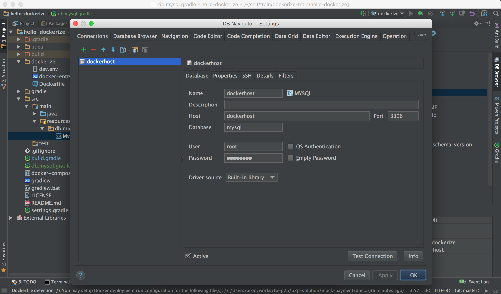
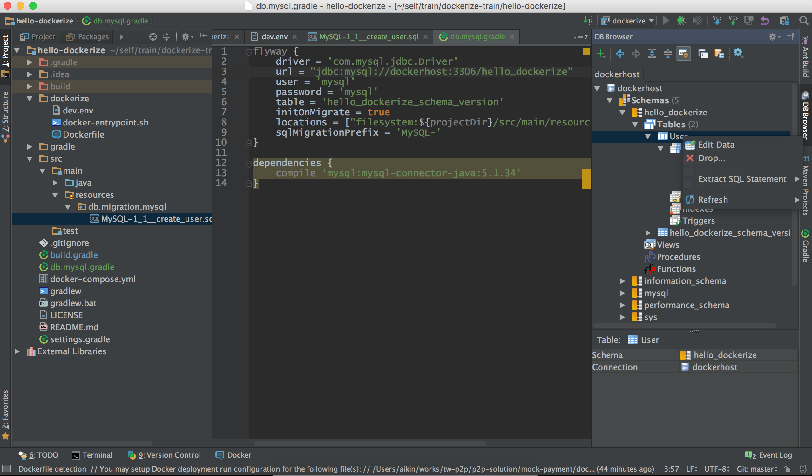
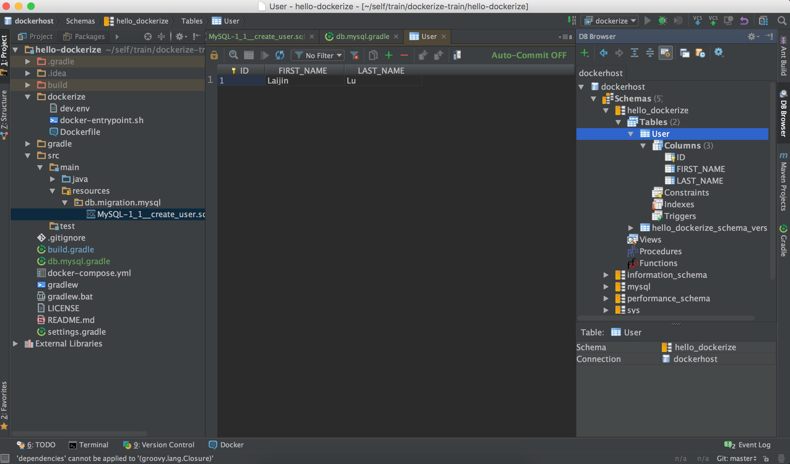

在容器化开发环境中分享了如何容器化本地的开发环境。对于一个Web应用，数据库似乎是必不可少的东西。下面会通过例子来介绍一下如何Setup一个容器中的数据库。例子将会使用的技术栈：
Setup Codebase
- clone hello-dockerize repo
1
$ git clone https://github.com/aikin/hello-dockerize.git
Install MySQL On Docker Image
- 在
dockerize目录下新建文件docker-entrypoint.sh，用于控制MySQL数据库的启动。 修改Dockerfile，添加安装
MySQL的配置：1
2
3
4
5
6
7
8
9
10
11
12
13
14
15
16
17
18
19
20
21
22
23
24
25
26
27
28
29
30
31
32
33
34
35
36
37
38
39
40
41
42# === Install Mysql ===
RUN groupadd -r mysql && useradd -r -g mysql mysql
RUN mkdir /docker-entrypoint-initdb.d
ENV MYSQL_MAJOR 5.7
ENV MYSQL_VERSION 5.7.11-1ubuntu14.04
# gpg: key 5072E1F5: public key "MySQL Release Engineering <mysql-build@oss.oracle.com>" imported
RUN apt-key adv --keyserver ha.pool.sks-keyservers.net --recv-keys A4A9406876FCBD3C456770C88C718D3B5072E1F5
RUN echo "deb http://repo.mysql.com/apt/ubuntu/ trusty mysql-${MYSQL_MAJOR}" > /etc/apt/sources.list.d/mysql.list
# the "/var/lib/mysql" stuff here is because the mysql-server postinst doesn't have an explicit way to disable the mysql_install_db codepath besides having a database already "configured" (ie, stuff in /var/lib/mysql/mysql)
# also, we set debconf keys to make APT a little quieter
RUN { \
echo mysql-community-server mysql-community-server/data-dir select ''; \
echo mysql-community-server mysql-community-server/root-pass password ''; \
echo mysql-community-server mysql-community-server/re-root-pass password ''; \
echo mysql-community-server mysql-community-server/remove-test-db select false; \
} | debconf-set-selections
RUN apt-get update
RUN apt-get install -y mysql-server="${MYSQL_VERSION}"
RUN rm -rf /var/lib/apt/lists/*
RUN rm -rf /var/lib/mysql && mkdir -p /var/lib/mysql
# comment out a few problematic configuration values
# don't reverse lookup hostnames, they are usually another container
RUN sed -Ei 's/^(bind-address|log)/#&/' /etc/mysql/my.cnf \
&& echo 'skip-host-cache\nskip-name-resolve' | awk '{ print } $1 == "[mysqld]" && c == 0 { c = 1; system("cat") }' /etc/mysql/my.cnf > /tmp/my.cnf \
&& mv /tmp/my.cnf /etc/mysql/my.cnf
VOLUME /var/lib/mysql
COPY docker-entrypoint.sh /usr/local/bin/
RUN chmod +x /usr/local/bin/docker-entrypoint.sh
RUN ln -s usr/local/bin/docker-entrypoint.sh /entrypoint.sh # backwards compat
ENTRYPOINT ["docker-entrypoint.sh"]
EXPOSE 3306
CMD ["mysqld"]新建文件dev.env，用于配置数据库账号和密码。
1
2
3
4MYSQL_USER=mysql
MYSQL_PASSWORD=mysql
MYSQL_DATABASE=hello_dockerize
MYSQL_ROOT_PASSWORD=12345678-
1
2
3
4
5
6
7
8
9
10
11
12
13
14web:
build: ./dockerize
env_file: ./dockerize/dev.env
environment:
- LANG=C.UTF-8
- TERM=xterm
- DEBUG=true
ports:
- "8080:8080"
- "3306:3306"
- "5005:5005"
volumes:
- .:/hello-dockerize
- /var/lib/mysql:/var/lib/mysql 启动容器
1
$ docker-compose run --service-ports web
Use Database Migrations Flyway
新建文件db.mysql.gradle
1
2
3
4
5
6
7
8
9
10
11
12
13
14flyway {
driver = 'com.mysql.jdbc.Driver'
url = "jdbc:mysql://dockerhost:3306/hello_dockerize"
user = 'mysql'
password = 'mysql'
table = 'hello_dockerize_schema_version'
initOnMigrate = true
locations = ["filesystem:${projectDir}/src/main/resources/db/migration/mysql"]
sqlMigrationPrefix = 'MySQL-'
}
dependencies {
compile 'mysql:mysql-connector-java:5.1.34'
}修改build.gradle文件，添加
1
2
3
4
5
6
7
8
9
10
11
12
13buildscript {
repositories {
jcenter()
maven { url "http://repo.spring.io/snapshot" }
maven { url "http://repo.spring.io/milestone" }
}
dependencies {
classpath("org.springframework.boot:spring-boot-gradle-plugin:1.3.5.RELEASE")
classpath "org.flywaydb:flyway-gradle-plugin:3.0"
}
}
apply plugin: 'flyway'
apply from: "db.mysql.gradle"新建目录
src/main/resources/db/migration/mysql，添加 migration sql 脚本MySQL-1_1__create_user.sql：1
2
3
4
5
6
7CREATE TABLE User (
ID BIGINT PRIMARY KEY AUTO_INCREMENT,
FIRST_NAME varchar(64) NOT NULL,
LAST_NAME varchar(64) NOT NULL
) ENGINE = InnoDB DEFAULT CHARSET = utf8;
insert into User (FIRST_NAME, LAST_NAME) values ('Laijin', 'Lu');执行 migrate 命令:
1
$ ./gradlew flywayClean flywayInit flywayMigrate
Check Migrate Result On Intellij IDEA
安装 Intellij IDEA plugin
Database Navigator，配置connections：
查看
User表数据

结束了吗？并没有，如何将应用和数据库分离成两个独立的容器。